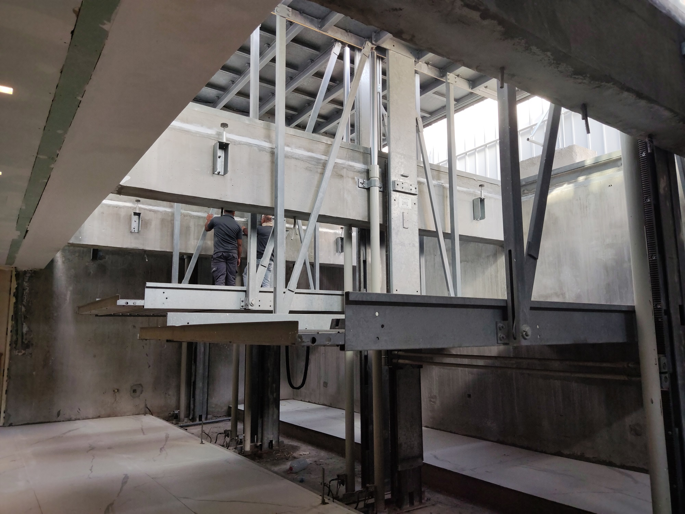
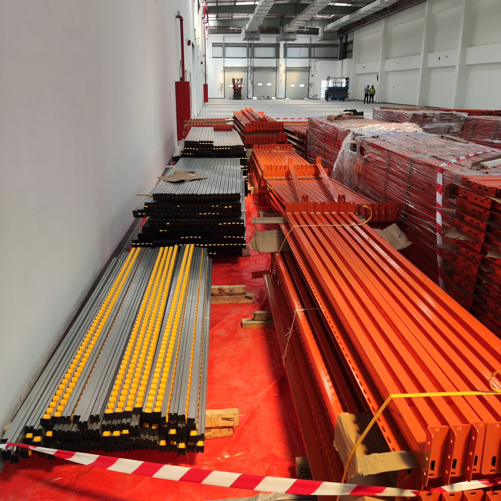
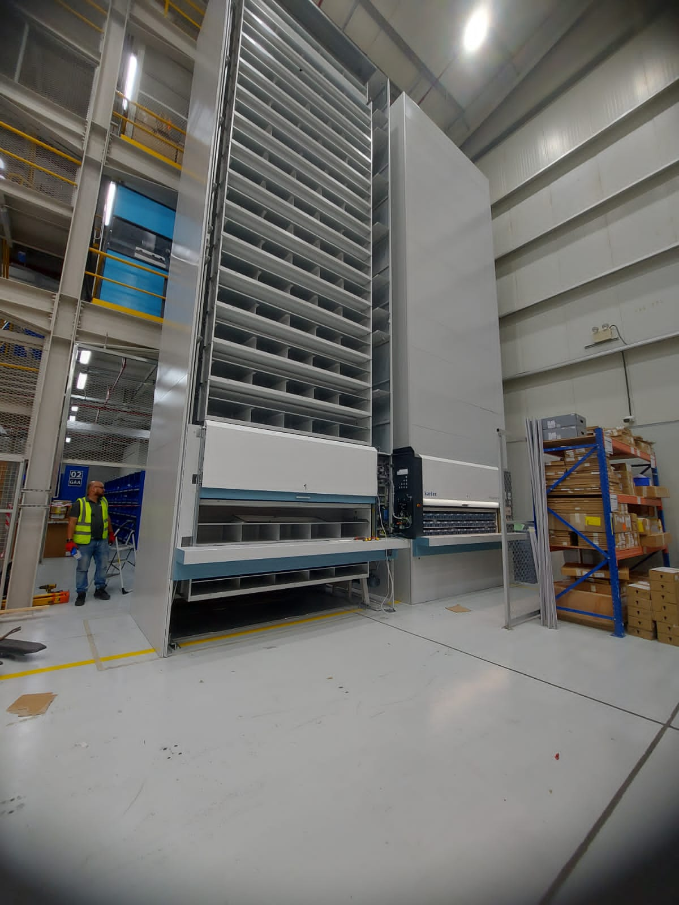
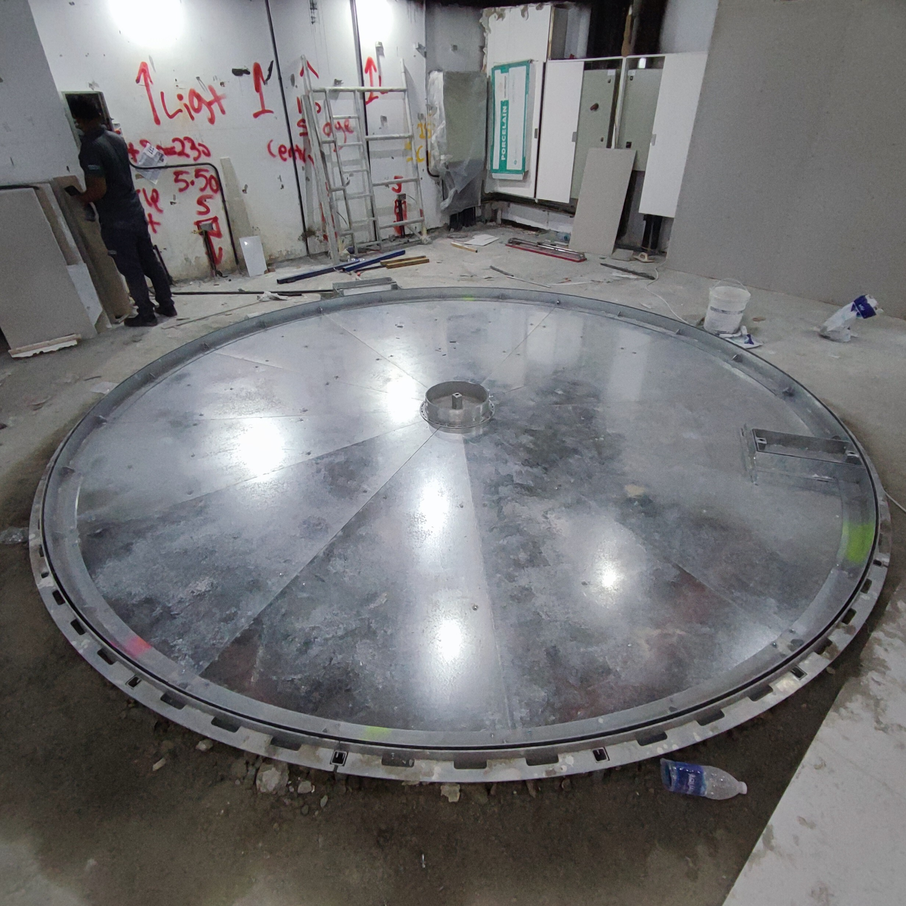
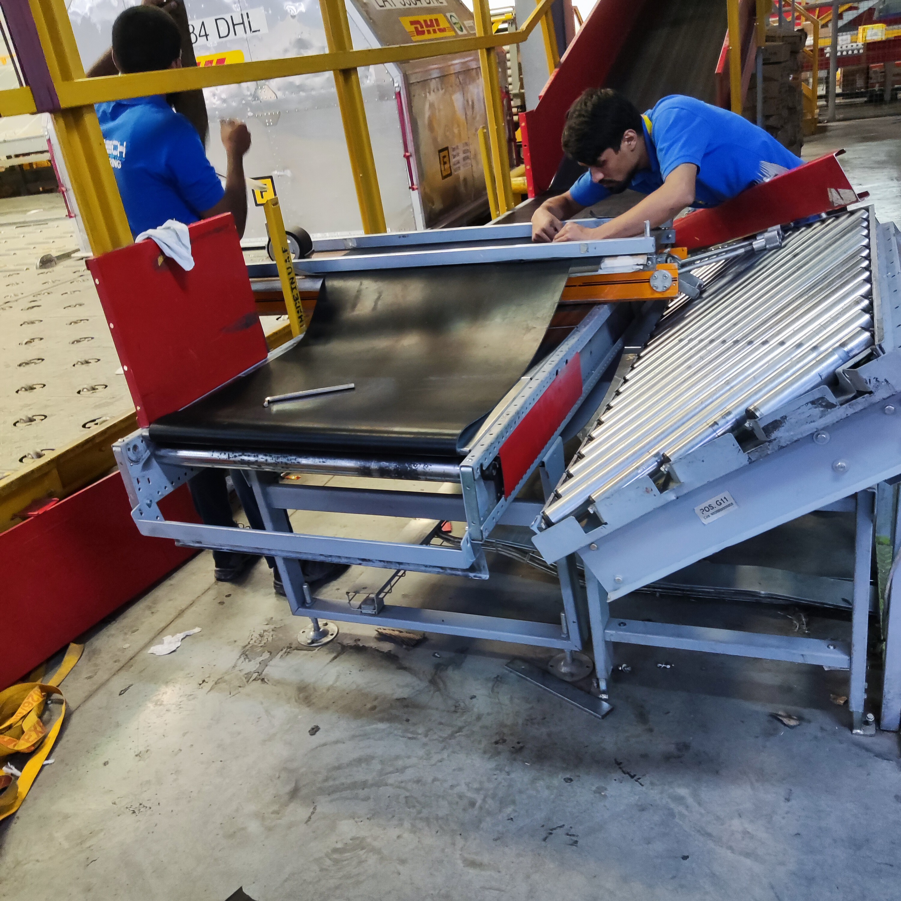
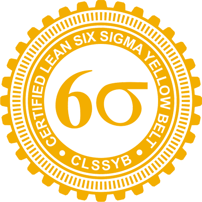
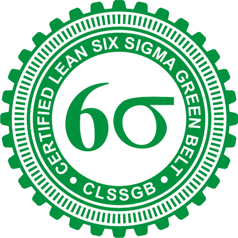
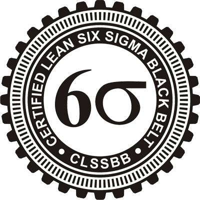
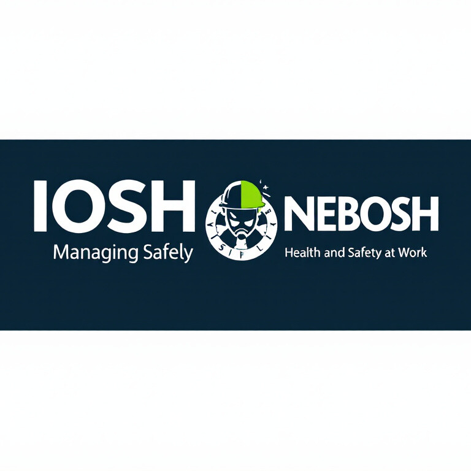

Industrial Automation Systems
Hands-on experience with automated systems, control panels, sensors, motors, VFDs, PLC-supported environments, and operational troubleshooting.
Delivering high-performance engineering solutions across Saudi Arabia, UAE, and India with 10+ years of expertise in electro-mechanical systems, industrial automation, material handling systems, commissioning, maintenance, and Lean Six Sigma improvement.
I combine practical field execution, client coordination, troubleshooting discipline, and process improvement to keep critical systems reliable and operational.

I am an Electrical & Maintenance Engineer with around 10 years of hands-on experience in electro-mechanical systems, industrial automation, material handling systems, conveyor systems, car parking solutions, and automated storage systems.
My experience covers installation, commissioning, preventive maintenance, corrective maintenance, troubleshooting, site coordination, spare parts planning, documentation, client communication, vendor coordination, and team support across demanding operational sites.
My focus is simple: reduce downtime, improve reliability, and deliver practical engineering solutions that clients can trust.
Hands-on experience with automated systems, control panels, sensors, motors, VFDs, PLC-supported environments, and operational troubleshooting.
Installation, modification, alignment, belt replacement, breakdown support, and reliability improvement for conveyor and logistics systems.
Preventive and corrective maintenance for motors, gearboxes, hydraulics, control systems, mechanical assemblies, and safety devices.
Planning, execution, manpower coordination, documentation, site readiness, permits, and client-facing project delivery.
Managing site communication, supplier follow-up, quotations, emergency procurement, local contractors, and technical clarifications.
Certified Yellow, Green, and Black Belt with focus on reducing repeat failures, improving maintenance flow, and supporting measurable results.
Each project is presented through challenge, solution, and operational impact — the way technical managers and recruiters understand value.

Challenge: Belt tracking issues, shipment transition problems, and operational downtime.
Solution: Belt alignment, platform correction, guide adjustment, drive inspection, and operational testing.
Impact: Improved system stability and reduced recurring stoppages.

Challenge: Installation and coordination of a specialized automated storage/sorting system.
Solution: Supported installation, testing, supplier coordination, and system readiness activities.
Impact: Contributed to smooth commissioning and operational handover.

Challenge: Maintaining reliable operation for a private villa car turntable system.
Solution: Bi-annual maintenance, inspection, troubleshooting, and client communication.
Impact: Ensured reliable equipment performance and customer confidence.

Challenge: Supporting multiple client sites with urgent breakdowns, manpower coordination, spare parts, and documentation.
Solution: Central coordination, vendor follow-up, reporting, and on-site technical guidance.
Impact: Strengthened response time and site reliability.
Leading site support, troubleshooting, maintenance, installation, client coordination, and engineering execution for industrial automation and material handling systems.
Handled complex maintenance activities, shift coordination, preventive maintenance, corrective maintenance, and support for operational equipment reliability.
Built strong technical foundations in PLC basics, SCADA, motor inverter settings, electrical maintenance, soldering, and machinery support.




“A practical engineer who understands both field reality and client expectations.”
Site Execution Strength“Able to respond to breakdowns, coordinate resources, and keep systems operational under pressure.”
Operational Reliability“Focused on long-term reliability, documentation, safety, and continuous improvement.”
Professional Engineering Mindset